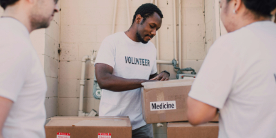

Hope for Tomorrow: A Brighter Future Begins Today
At Hope for Tomorrow, we believe that every young person deserves the chance to grow, learn, and thrive in a world free from the devastating effects of drug abuse. Unfortunately, the harsh reality is that drugs are killing our youth, robbing them of their potential, and tearing apart families and communities. This alarming crisis is what led us to create Hope for Tomorrow—a place where we are dedicated to educating, empowering, and supporting our youth to overcome the challenges of addiction.
Our Mission
Our mission is clear: to provide education, resources, and support to young people, helping them make informed choices and lead healthy, fulfilling lives. We strive to empower as many youth as possible, guiding them away from the dangers of drug use and towards a brighter, drug-free future. We believe that the youth are our future, and by investing in them today, we are building a stronger, more resilient tomorrow.
Why We Exist
The statistics surrounding drug abuse among young people are staggering, and the impact on our society is profound. We saw a need for a dedicated organization that could address these issues head-on, offering hope and healing to those in need. That's why Hope for Tomorrow was born—out of a deep commitment to making a real, lasting difference in the lives of young people.
What We Do
- Education and Awareness: We offer comprehensive educational programs designed to inform youth about the dangers of drug use. Through workshops, seminars, and outreach events, we aim to spread awareness and promote healthy, positive lifestyles.
- Support Services: Our organization provides crucial support to those already struggling with addiction. We offer counseling, therapy, and access to rehabilitation services that are tailored to meet the unique needs of each individual.
- Community Engagement: We work closely with schools, parents, and community leaders to create supportive environments where young people can thrive. By building strong networks of support, we are creating a safety net that helps prevent drug abuse and aids in recovery.
- Empowerment Initiatives: Beyond education and support, we focus on empowering youth by providing them with opportunities to develop skills, build confidence, and pursue their dreams. We believe that by giving young people the tools they need to succeed, we are helping to create a generation of leaders who will shape a better future.
Our Vision
We envision a world where every young person has the opportunity to reach their full potential, free from the shadow of addiction. A world where communities are strong, supportive, and committed to the well-being of their youth. Together, we can turn this vision into reality, one life at a time.
Join Us
We invite you to join us in our mission to save lives and build a better future. Whether you're looking to volunteer, donate, or simply learn more, your involvement can make a powerful difference. Together, we can create a tomorrow filled with hope, health, and happiness for all our youth.
